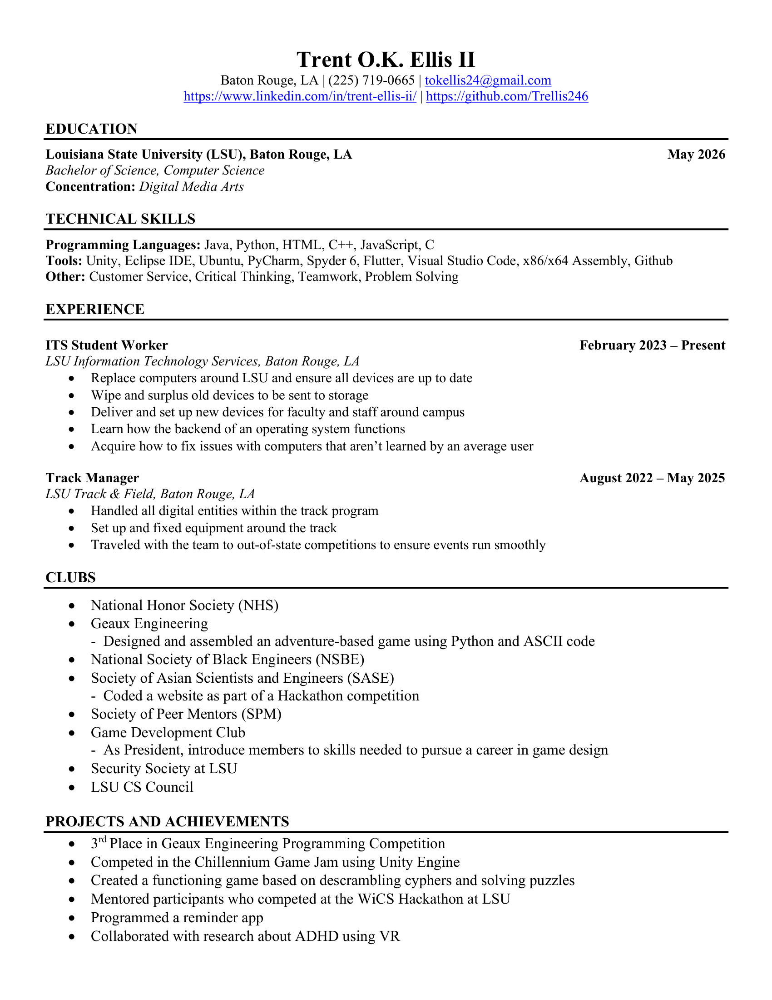

About Me
I am currently a senior at Louisiana State University pursuing my Bachelors in Computer Science. I discovered my passion for coding when I questioned what goes on behind the scenes in the video games I enjoyed as a kid. I would always question how games functioned and how they were designed. This same wonder is what led me down the path of computer science and even design as a whole. My hobbies include playing video games, sketching, and exercising. I want to take my passion for not only coding and art, but also my desire to help others and create games and sites that'll bring a smile to users' faces.
Skills
Clubs
Resume
- Game Development
Created games in Unity using the C# language - App Development
Collaborated with team to create a Clue-inspired mystery game based on my collge campus - IT Services
Solved computer issues users have had that they couldn't solve themselves
- National Society of Black Engineers
- Society of Peer Mentors
- Game Development Club
- Security Society at LSU
- LSU CS Council
